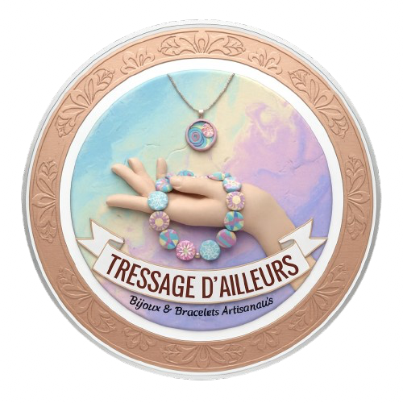

Bienvenue dans l’univers de Tressage Ailleurs.
Ici, chaque création est réalisée à la main, avec patience,
attention et le plaisir de faire.

Créations artisanales faites avec intention
Bienvenue dans l’univers de Tressage Ailleurs.
Ici, chaque création est réalisée à la main, avec patience,
attention et le plaisir de faire.